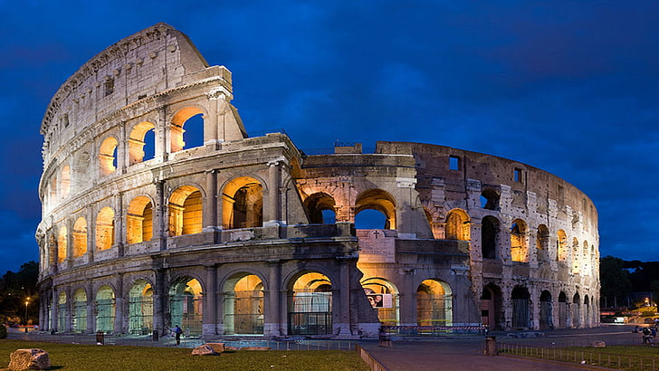

Koloseum (berasal dari bahasa latin Colosseum atau Colisseum) merupakan salah satu peninggalan sejarah yang merupakan sebuah arena gladiator. Colosseum ini didirikan oleh walikota Vespansias pada tahun ke 72 SM pada masa Domitianus dan kemudian diselesaikan oleh sang anak yakni Titus. Koloseum ini terletak di tengah kota Roma, Italia.
Colosseum Roma dibangun pada tahun 80 SM dan diresmikan oleh Jendral Titus. Pembangunan pertama dari Colosseum ini dilakukan oleh Walikota bernama Vespasian ketika Italia dipegang oleh Domitianus. Pengerjaannya tidak selesai dalam satu waktu tapi akhirnya pembangunannya selesai pada waktu kekuasaan Titus yang merupakan keturunannya. Disaat pengerjaannya selesai, pada saat peresmian dilakukan sebuah pesta mewah dengan dilakukannya penyembelihan 9.000 ekor binatang yang berjenis bintaang buas yang sengaja diabantai di Colosseum tersebut. Dimana agar mengurangi merembesnya darah kemana mana dengan cara melapisi lantai Colosseum dengan pasir agar tidak terjadinya banjir darah. Dimana colosseum ini difungsikan sebagai sebuah gedung pertunjukan gladiator. Dalam bahasa setempat, arena ini disebut dengan Flavian Amphiteatre.
Pada masa Romawi Kuno biasanya mempertontonkan pertarungan berdarah selama ratusan tahun yang mengakibatkan tumpukan daftar kematian panjang di dalam Colosseum tersebut. Hingga pada tahun 217 Coloseum masih dipakai sebagai tempat pertunjukan dan berfungsi normal. Bangunan ini sempat tersambar petir, namum baru diperbaiki pada tahun 238 Masehi agar pertujukan tak terhenti lama. Kemudian pertunjukan berdarah ini berakhir disaat golongan Kristen Gereja yang taat berusaha untuk menyudahi hal tersebut, walau usaha tersebut tidak terwujud secara cepat. Akhirnya perlahan lahan kebiasaan gladiator berdarah ini dapat dihilangkan. Kemudian pada tahun 524 Masehi Colosseum digunakan sebagai tempat penyimpanan barang agar tidak kosong, pada tahun 442 dan 508 Masehi Colosseum telah menghadapi gempa bumi. Tercatat ada gempa bumi pada tahun 847 Dan 1349 Masehi yang melanda wilayah sekitar Colosseum yang mengakibatkan bangunan ini mengalami kerusakan berat. Yang mana disebabkan karena Roma, Italia merupakan langganan gempa bumi pada zaman tersebut.
Hingga akhirnya pemerintah mengubahnya menjadi benteng pertahanan dan menambahkan Gereja di dalamnya, yang menggambarkan kebudayaan dan perubahan watak masyarakat Roma beberapa ratus tahun. Selain bencana alam yang melanda Roma dan Colosseum terdapat juga bencana kebakaran yang terjadi pada masa kepemimpinan Nero. Renovasi-renovasi Colosseum akhirnya dilakukan dengan menambah lapisan bangunan dengan bebatuan marmer. Bekas gempa bumi dan kebakaran tidak lagi menyisakan tampilan buruk bagi Colosseum. Bahkan keluarga kaisar justru mengambili marmer dari Colosseum untuk membuat konstruksi Santo Peter's Basilica serta bangunan Palassi yang merupakan rumah khusus bagi keluarga kekaisaran Roma dan hingga kini telah banyak dilakukan renovasi-renovasi yang dilakukan pada Colosseum tersebut guna merawat salah satu keajaiban dunia ini.
